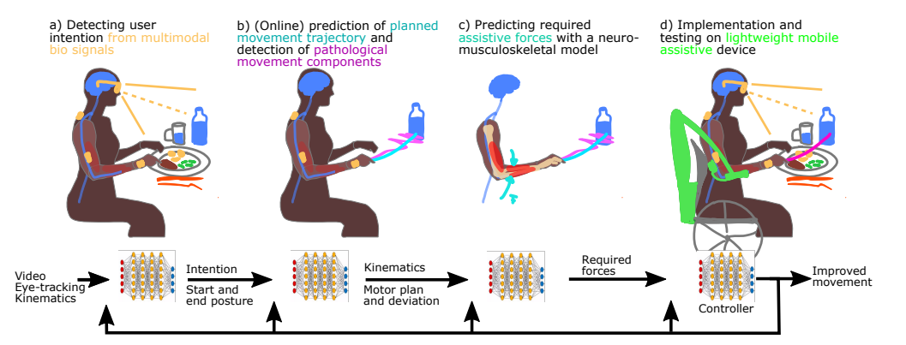

iAssistADL: Intelligent assistive device for patients with neuro-degenerative movement disorder: Concepts and first implementations

Venue. ICORR (2025)
Materials.
DOI
PDF [link]
Abstract. Upper-limb activities of daily living like eating and drinking are crucial for self-determination and autonomy and, thus, quality of life. Patients with neurodegenerative diseases such as Parkinson's disease, multiple sclerosis or cerebellar ataxia are often severely impaired in performing these activities of daily living. While these patients are still able to plan motor actions, and their muscle strength is rarely impaired, tremor or overshooting movements disturb the intended movements. This occurs progressively in the course of disease in a way that independent eating and drinking becomes increasingly difficult. The goal of this research project is to develop a non-invasive assistive device suppressing pathological movement components while allowing intended movement. The newly designed hardware will be controlled by a combination of computational methods to detect user intention, detect pathological movement components within intended movements, and predict the required correction forces for several upper-limb activities of daily living. In this manuscript, we will describe concepts of control hard- and software as well as first implementation and experiments with the individual components we plan to integrate in the future.
Link to this page: